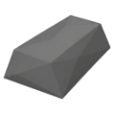

🔺
Greyiron Arrowheads
Resource · Tier 2
| Property | Value |
|---|---|
| Value | 16 coins |
| Sells for | 2 coins each |
| High Alchemy | 2 coins |
| Market price | 3 coins (a guide for trading; shops and High Alchemy pay far less) |
| Stacks | Yes |
Made by
| Recipe | Level | Needs |
|---|---|---|
| ⚒️ Smith Greyiron Arrowheads | 🔨 Forging 15 |  Greyiron Bar |
Used to make
| Recipe | Level | Amount |
|---|---|---|
| 🪶 Fletch Greyiron Arrows | 🪶 Fletching 15 | 15 |